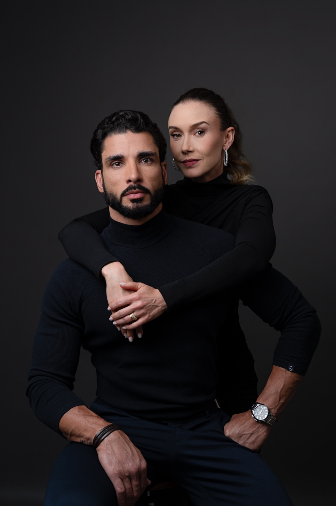

Sobre claro · emoldurado
Full-bleed · tipografia clara

Quem conduz
Vivemos o que ensinamos
P&B · acento dourado
Faça: respiro claro ao redor; pele quente; vinho/dourado como acento; P&B atemporal.
Evite: página inteira escura; grade fria; recolorir a pele; texto escuro sobre foto escura.